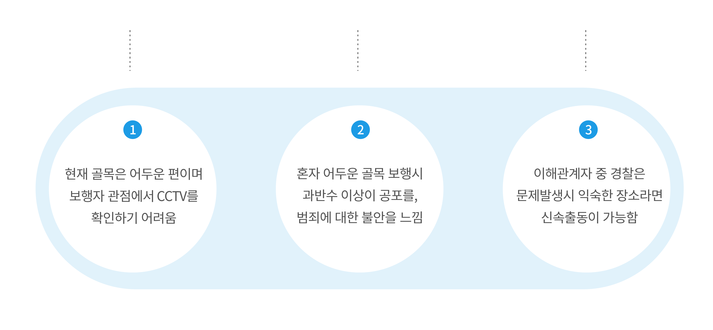
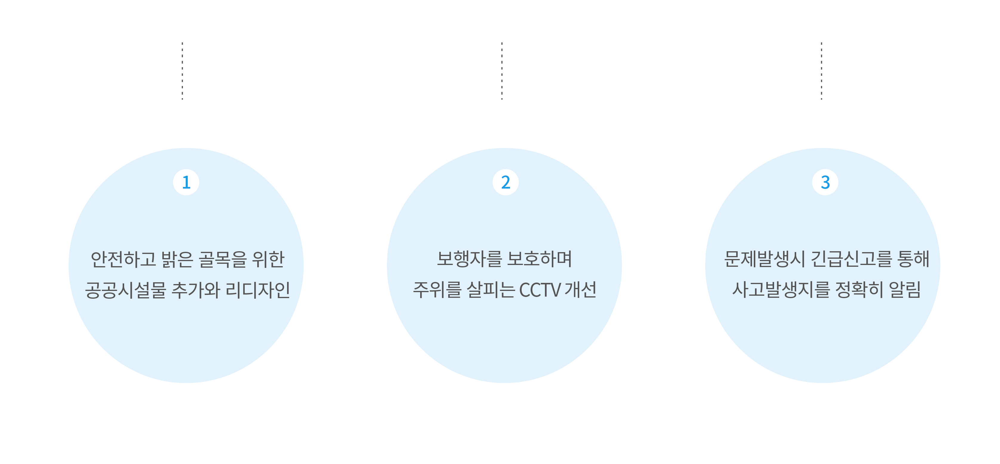
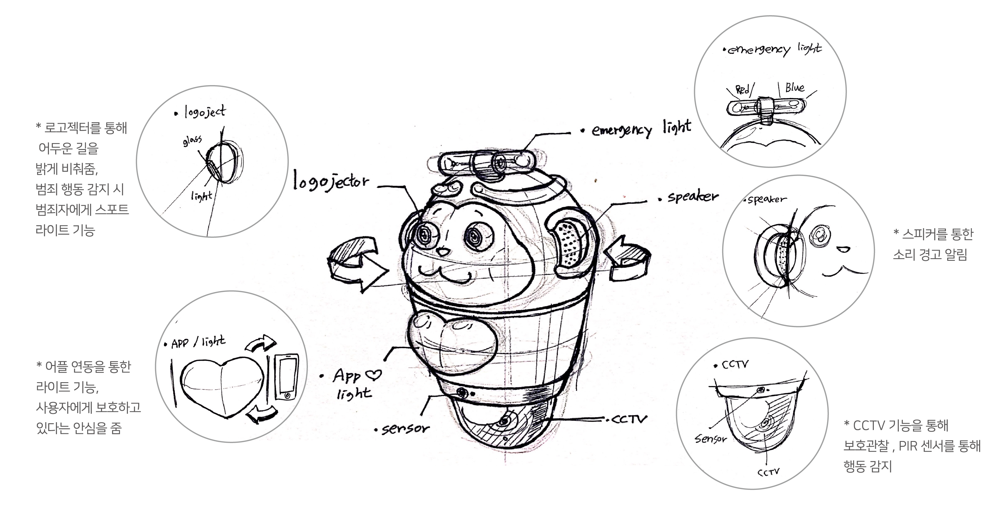
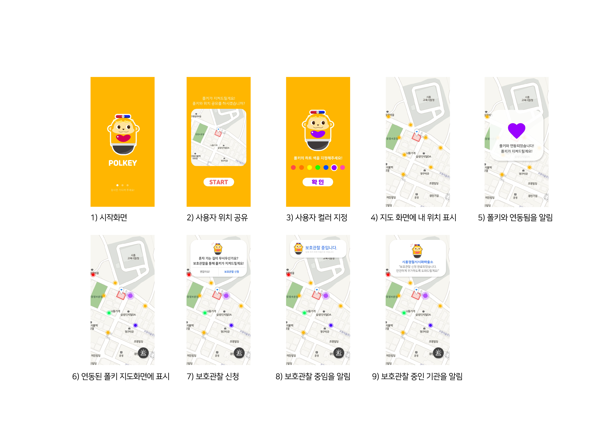
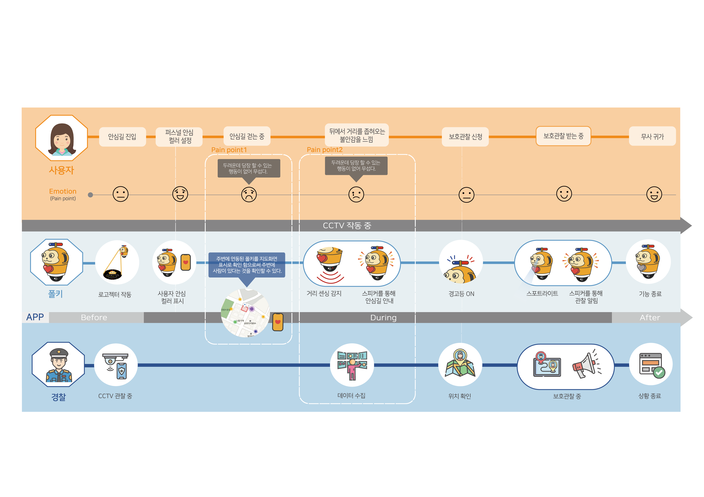
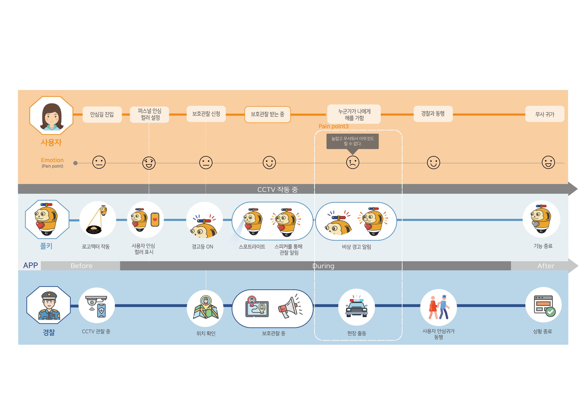

Suji Kim
KOREA POLYTECHNIC UNIVERSITY
Convergence Design
UX/UI
······· App
······· App
······· App
Service Design
······· Public Design
······· Concept Design
Video
······· After Effects
······· Cinema 4D

POLKEY
범죄예방 안심 길거리 CCTV ROBOT
작업 구분
기여도
작업 시기
팀 프로젝트
기획, 영상
19.10 ~ 19.12 (2months)
Problem
Challenge
Research
Result
Solution
Sketch
3D Modeling

Application
User Journeymap
User Journeymap : 문제발생
